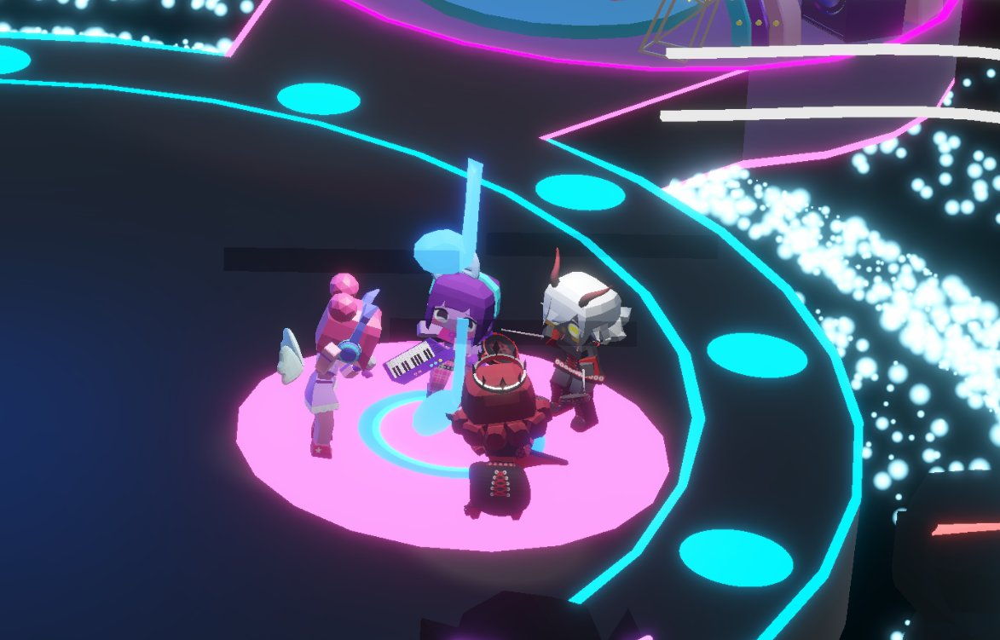
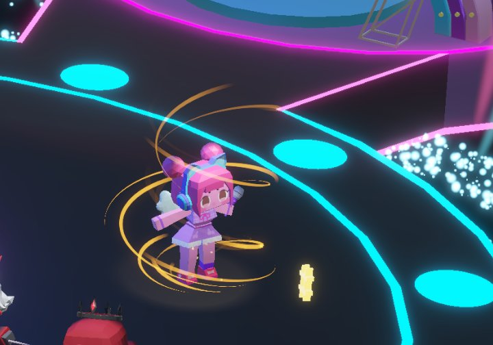
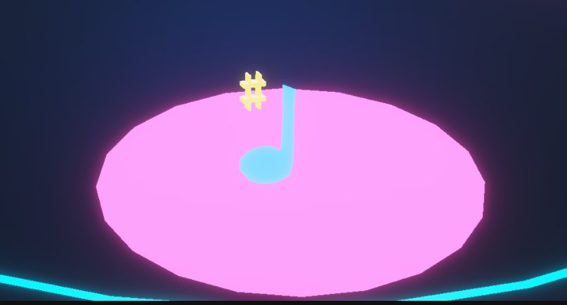
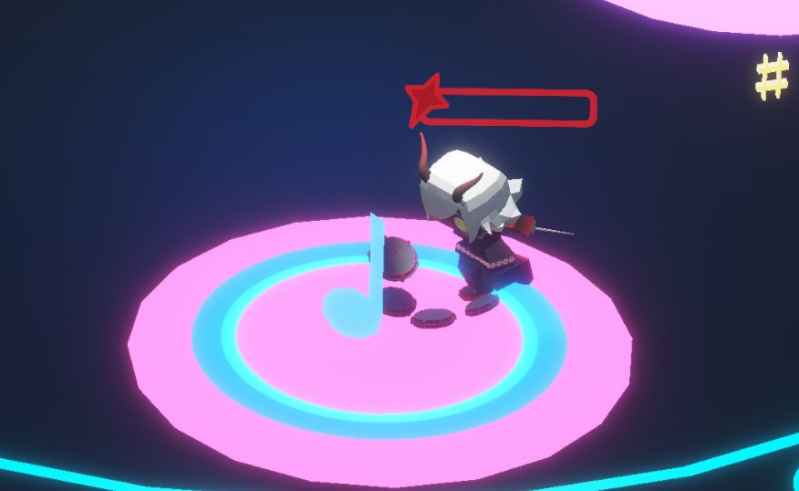
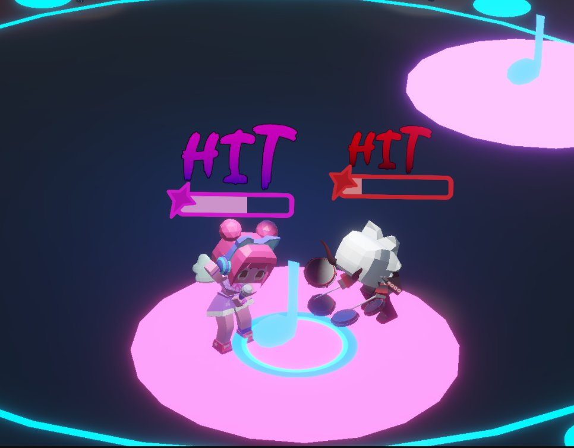
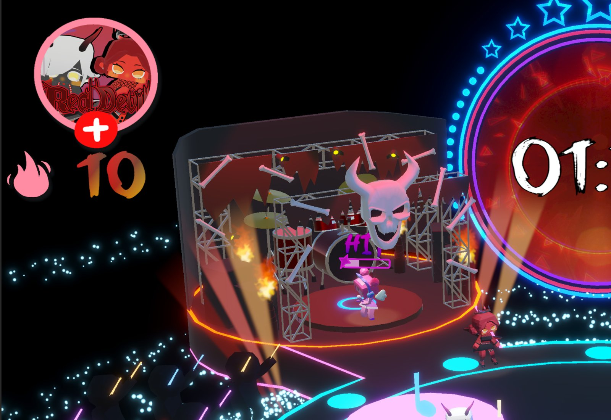
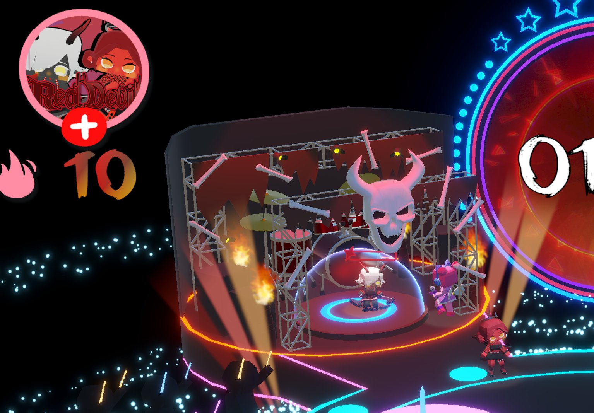
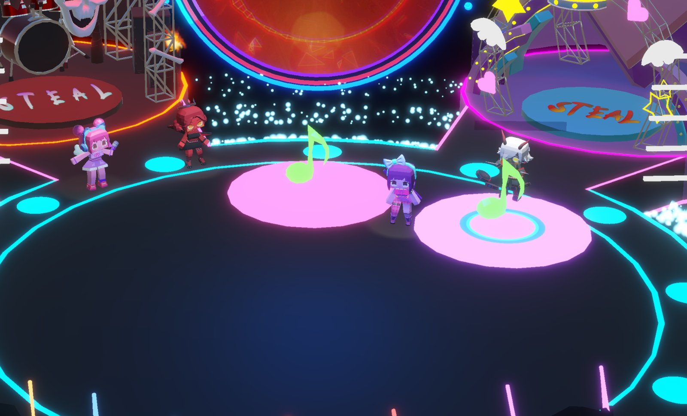

项目概述
BVW 是 ETC 第一学期的核心课程：每两周换一次队伍、换一个命题，从零做出一个可玩的世界。第 4 轮我们做了 Beat Battle Royale——一款 2v2 的节奏对战派对游戏，一局 3 分 26 秒，支持键盘和 Xbox 手柄。
玩家分成 Pop 队和 Red Devil 队，在同一个舞台上踩着歌曲的节拍打出连击来争夺音符；比分领先的一方会“接管”舞台——大屏切成自己的画面，背景音乐也淡入自己乐队的版本。设计由全组共同完成，我和另一位程序分工实现。
核心机制
- 节拍判定：按歌曲的时间戳生成收缩的圆圈，玩家在圆圈闭合时按键；Perfect 窗口 0.15 秒、Good 0.3 秒，每一拍每人只判一次。
- 竞技圈：舞台上有 7 个圈，每 15 秒随机激活 2 个。进圈后比连击：先打到目标连击数的一方赢得这个音符。音符的分值分三段递增（10 → 15 → 20），后期的争夺更值钱。
- 偷音符：跑到对方舞台上发起 Steal——进攻方要 6 连击、防守方只要 4 连击；输的人被传送出场并锁定 5 秒。
- Aura 增益：定时刷新的道具，捡到后 10 秒内连击翻倍。
- 领先方接管舞台：每 5 秒按比分判断领先方，交叉淡入对应乐队的 BGM，并切换中央大屏的舞台视频。

我负责的部分
我负责
- 与全组共同设计节奏对战机制
- 玩家 3C：移动、镜头、按键反馈
- 节拍判定：按时间戳生成圆圈，Perfect / Good 判定窗，每拍每人只判一次
- 计分系统：三段式分值与音符归属
- 领先方切换：按比分交叉淡入 BGM、切换舞台大屏
团队其他成员负责
- 竞技圈激活、Steal 与传送锁定、Aura 道具等其他玩法逻辑（另一位程序）
- 角色、舞台与特效（2 位美术）
- 两支乐队的两版配乐与音效（音乐）
从原型到正式版
第一周先在灰盒舞台上把“踩拍 → 连击 → 抢音符”的循环跑通：粉色圆台、收缩的判定圈、头顶的 HIT 连击条；确认好玩之后第二周再换上正式的舞台、角色与灯光。






上：原型阶段的判定圈与 HIT 连击条；下：正式版的舞台与音符。